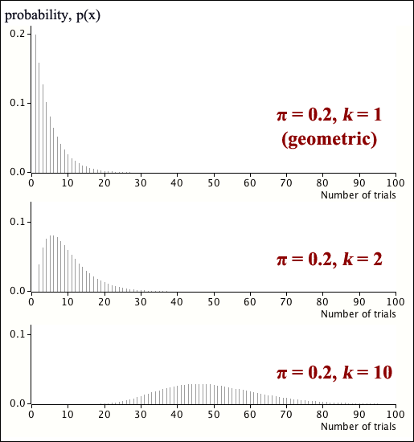
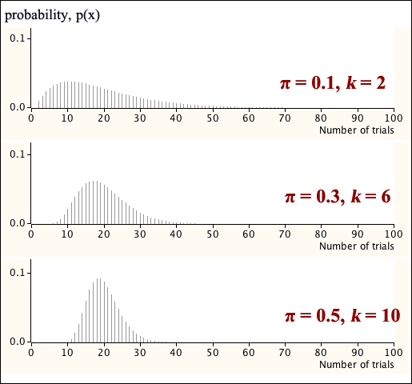

Waiting for the k'th success
The number of independent Bernoulli trials until the first success is observed has a geometric distribution. We now generalise this to consider the number of trials until we observe the \(k\)'th success.
Definition
In a sequence of independent Bernoulli trials with \(P(success) = \pi\) in each trial, the number of trials until the \(k\)'th success is observed has a distribution called a negative binomial distribution.
\[ X \;\; \sim \; \; \NegBinDistn(k, \pi) \]The probability function for the negative binomial distribution can be fairly easily obtained.
Negative binomial probability function
If a random variable has a negative binomial distribution, \(X \sim \NegBinDistn(k, \pi) \), then its probability function is
\[ p(x) = \begin{cases} \displaystyle{{x-1} \choose {k-1}} \pi^k(1-\pi)^{x-k} & \text{for } x = k, k+1, \dots \\[0.5em] 0 & \text{otherwise} \end{cases} \](Proved in full version)
The negative binomial distribution is identical to the geometric distribution when \(k=1\).

The distribution's second parameter gives more flexibility in its possible shape than the geometric distribution. The following three negative binomial distributions all have the same mean (μ = 20).
